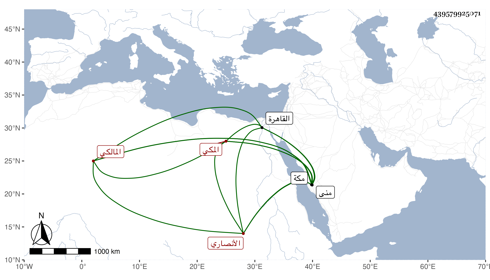

0902Sakhawi.DawLamic.ITO20230111-ara1.EIS1600.439579925071
Biography ID: 439579925071
345
أبو السعادات جلال الدين بن الشهاب أحمد بن المحيوي عبد القادر ابن أبي القسم بن أبي العباس بن عبد المعطي الأنصاري المكي المالكي الماضي أبوه وجده سبط الوجيه عبد الرحمن بن النحاس ويسمى محمدا ولد بعد موت أبيه في ايام منى سنة سبع وستين وثمانمائة بمكة ونشأ فكفله جده ومات أيضا قبل بلوغه فقرأ القرآن وغيره وتدرب بقريبه أبي الخير بن أبي السعود ونحوه في العربية بل قرأ على العلمي في الفقه وغيره وقرأ علي في سنة خمس وثمانين القول البديع من نسخة حصلها ولازمني في غير ذلك وكذا قرأ على ابن حاتم المغربي وزوجه أبو الخير المشار إليه ابنته وقدم القاهرة في البحر سنة خمس وتسعين ثم عاد في موسمها .
